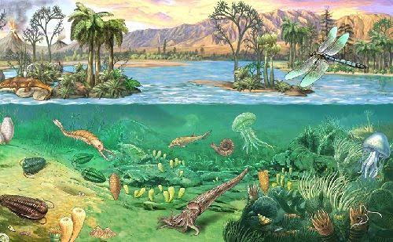

¿CUÁNDO OCURRIÓ?
El Paleozoico se desarrolló aproximadamente entre hace 541 y 252 millones de años. Fue un periodo de gran duración dentro de la historia geológica de la Tierra.
Historia de la Tierra
Era geológica
El Paleozoico es una era geológica caracterizada por importantes cambios en la vida y en la superficie de la Tierra. Durante este periodo aparecieron y se desarrollaron diferentes formas de vida, mientras los continentes experimentaron grandes transformaciones.

El Paleozoico se desarrolló aproximadamente entre hace 541 y 252 millones de años. Fue un periodo de gran duración dentro de la historia geológica de la Tierra.
Durante el Paleozoico la vida experimentó una importante diversificación. Los organismos marinos tuvieron un gran desarrollo y posteriormente diferentes formas de vida comenzaron a ocupar ambientes terrestres.
Durante esta era los continentes cambiaron de posición y, hacia el final del Paleozoico, gran parte de las masas continentales se encontraban reunidas formando el supercontinente Pangea.
El Paleozoico estuvo marcado por importantes cambios geológicos y biológicos. Durante esta era se produjeron grandes transformaciones en los ecosistemas y en la distribución de los continentes.
Gran diversificación de la vida durante la era.
Los organismos marinos tuvieron un importante desarrollo.
Diferentes organismos comenzaron a ocupar ambientes terrestres.
Los continentes terminaron formando el supercontinente Pangea.
¿Qué sigue?
Continúa conociendo la historia de la Tierra y descubre el siguiente periodo geológico.
Siguiente →